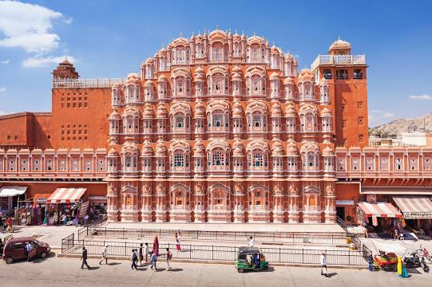
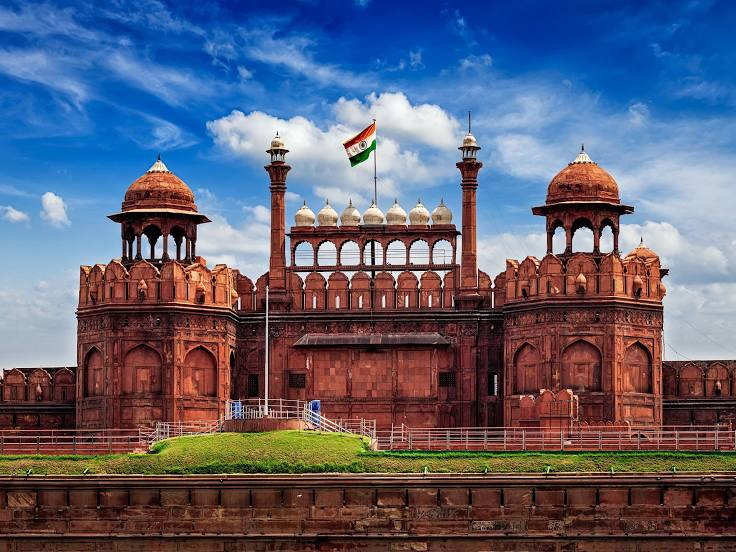

The Taj Mahal, is an Islamic ivory-white marble mausoleum on the right
bank of the river Yamuna in the Indian city of Agra. It was
commissioned in 1632 by the Mughal emperor Shah Jahan to house the
tomb of his favourite wife, Mumtaz Mahal; it also houses the tomb of
Shah Jahan himself. The tomb is the centrepiece of a 17-hectare
complex, which includes a mosque and a guest house, and is set in
formal gardens bounded on three sides by a crenellated wall.
Construction of the mausoleum was essentially completed in 1643, but
work continued on other phases of the project for another 10 years.
The Taj Mahal complex is believed to have been completed in its
entirety in 1653 at a cost estimated at the time to be around ₹32
million, which in 2020 would be approximately ₹70 billion. The
construction project employed some 20,000 artisans under the guidance
of a board of architects led by the court architect to the emperor,
Ustad Ahmad Lahauri. Various types of symbolism have been employed in
the Taj to reflect natural beauty and divinity.

The Hawa Mahal is a palace in the city of Jaipur, India. Built from
red and pink sandstone, it is on the edge of the City Palace, Jaipur,
and extends to the Zenana, or women's chambers. The structure was
built in 1799 by the Maharaja Sawai Pratap Singh, grandson of Maharaja
Sawai Jai Singh, the founder of the city of Jaipur, India. He was so
inspired by the unique structure of Khetri Mahal that he built this
grand and historical palace. It was designed by Lal Chand Ustad. Its
five-floor exterior is akin to a honeycomb with its 953 small windows
called Jharokhas decorated with intricate latticework. The original
intent of the lattice design was to allow royal ladies to observe
everyday life and festivals celebrated in the street below without
being seen, since they had to obey the strict rules of "purdah", which
forbade them to appear in public without face coverings. This
architectural feature also allowed cool air from the Venturi effect to
pass through, thus making the whole area more pleasant during the high
temperatures in summer. Many people see the Hawa Mahal from the street
view and think it is the front of the palace, but it is the back.

Amer Fort or Amber Fort is a fort located in Amer, Rajasthan, India.
Amer is a town with an area of 4 square kilometres located 11
kilometres from Jaipur, the capital of Rajasthan. The town of Amer and
the Amber Fort were originally built by Raja Man Singh and additions
were, later, made by Sawai Jai Singh. Located high on a hill, it is
the principal tourist attraction in Jaipur. Amer Fort is known for its
artistic style elements. With its large ramparts and series of gates
and cobbled paths, the fort overlooks Maota Lake, which is the main
source of water for the Amer Palace. Amer Palace is great example of
Rajput architecture. Some of its buildings and work have influence of
Mughal architecture. Constructed of red sandstone and marble, the
attractive, opulent palace is laid out on four levels, each with a
courtyard. It consists of the Diwan-e-Aam, or "Hall of Public
Audience", the Diwan-e-Khas, or "Hall of Private Audience", the Sheesh
Mahal, or Jai Mandir, and the Sukh Niwas where a cool climate is
artificially created by winds that blow over a water cascade within
the palace. Hence, the Amer Fort is also popularly known as the Amer
Palace.

Brihadishvara Temple, also called Rajarajesvaram or Peruvudaiyār
Kōvil, is a Hindu temple dedicated to Shiva located in South bank of
Kaveri river in Thanjavur, Tamil Nadu, India. It is one of the largest
South Indian temples and an exemplary example of a fully realized
Dravidian architecture. It is called as Dhakshina Meru. Built by Tamil
king Raja Raja Chola I between 1003 and 1010 AD, the temple is a part
of the UNESCO World Heritage Site known as the "Great Living Chola
Temples", along with the Chola dynasty era Gangaikonda Cholapuram
temple and Airavatesvara temple that are about 70 kilometres and 40
kilometres to its northeast respectively. The original monuments of
this 11th century temple were built around a moat. It included gopura,
the main temple, its massive tower, inscriptions, frescoes and
sculptures predominantly related to Shaivism, but also of Vaishnavism
and Shaktism traditions of Hinduism. The temple was damaged in its
history and some artwork is now missing.

The Red Fort or Lal Qila is a historic fort in Old Delhi, Delhi in
India that served as the main residence of the Mughal Emperors.
Emperor Shah Jahan commissioned construction of the Red Fort on 12 May
1638, when he decided to shift his capital from Agra to Delhi.
Originally red and white, its design is credited to architect Ustad
Ahmad Lahori, who also constructed the Taj Mahal. The fort represents
the peak in Mughal architecture under Shah Jahan, and combines
Persianate palace architecture with Indian traditions. The fort was
plundered of its artwork and jewels during Nadir Shah's invasion of
the Mughal Empire in 1739. Most of the fort's marble structures were
subsequently demolished by the British following the Indian Rebellion
of 1857. The fort's defensive walls were largely undamaged, and the
fortress was subsequently used as a garrison. On 15 August 1947, the
first Prime Minister of India, Jawaharlal Nehru, raised the Indian
flag above the Lahori Gate. Every year on India's Independence Day,
the Prime Minister hoists the Indian tricolour flag at the fort's main
gate and delivers a nationally broadcast speech from its ramparts.